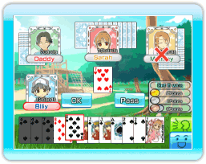

The objective of each game is to
get rid of all the cards in your hand first.
Three is the weakest card, followed by
4, 5, 6, 7, 8, 9, 10, J, Q, K, A, and 2, with 2 being the strongest card. If you use a Joker on its own, then it will be your strongest card. (However, the 3 of Spades can beat the Joker.)
- The person who starts off the
first game will be the person with the 3 of Diamonds, and that person will become the dealer. At the begining of the 2nd game, the person who ended the previous game in fourth place will become the dealer. The dealer can start with any card they want.
- The person who goes next will
have to put down a card that is stronger than the card previously played.
- If you have no cards to play,
or don't want to play a card, you can pass.
- If everyone passes, a new round begins with the last person who put down a card in the previous round.
- The dealer can choose to put down as many of the same card as they want.
- You can put down three or more consecutive cards if they are in the same suit. (Ex: 4, 5, 6, of Hearts)
- If the dealer puts down multiple
cards, the person following them must put down the same number of cards, but their cards must be stronger.
- Repeat steps 2 through 7, and whoever gets rid of their cards first wins first place for that round.
- When the 2nd game starts and
the cards have been passed out, the 1st and 4th place players will exchange 2 cards, and the 2nd and 3rd place players will each exchange 1 card.
The 1st and 2nd place will give cards they don't need. The 3rd and 4th place will have to give their strongest cards.
Once everyone has finished exchanging cards, then the 2nd game will start.
First person with 6 points will
win the game.
1st place will obtain 2 points, 2nd place will receive
1 point, 3rd and 4th place will get 0 points.
●Revolution
When you put down 4 or more
cards you will have a "Revolution". Once you've created a "Revolution" your card roles will switch. (The strongest card, 2, will now become the weakest and the weakest card, 3, will be the strongest.)
●Capital Fall
If the 1st place player in the
previous game couldn't maintain their place in the 2nd game, then they will automatically fall to 4th place for the next game.
●Cutting Eights
If an 8 is used, either by itself, or as part of a combination, then you can start a fresh round, and the person who put down the 8 will become the dealer.
●Joker
You can use a Joker as a
wild card (it can have the value of any other card).
●Spade 3s
You can beat 1 Joker with the
3 of Spades. When this happens, the round will finish and the person with the 3 of Spades can start a fresh round.
※You cannot use "Spade 3s" when you have a revolution.
●Bound
If two players in a row play cards of the same suit, the next player can only play cards of that suit for the rest of the round. This is called being "Bound".
※"Bound" rules will not be
allowed during Nintendo WFC play.
●Violation Loss
If you win with a 2, 8 or a Joker
you will suffer a "Violation Loss".
Even if you have pairs or more,
as long as there is a 2, 8 or a Joker in the pair it will count as a "Violation Loss".
※During a "Revolution",
playing a 3 will result in a "Violation Loss".